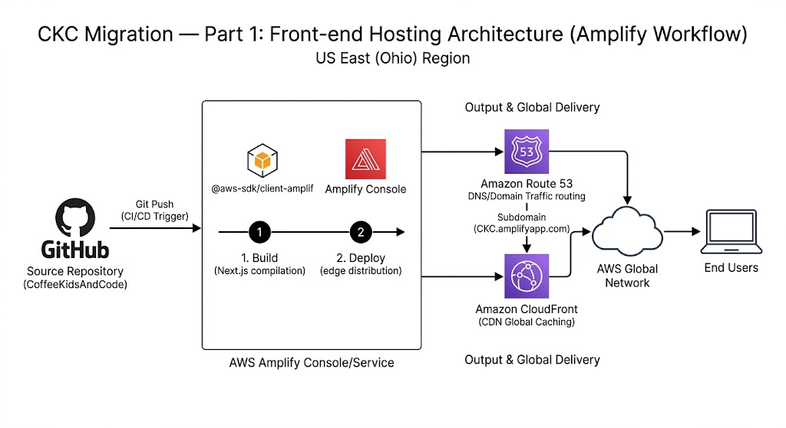

The CKC Migration: The Hosting Platform
When I first started building, I wanted the "easy button." In the world of Next.js, that’s Vercel. You push your code to GitHub, and—poof—your site is live. It’s magic. But as I started planning the CKC Migration, I realized I didn't want magic; I wanted mastery.
The Crossroads
I had to decide where the "face" of my platform would live. Every architect faces this choice: do you take the specialist tool, or the generalist powerhouse?
- Option A (Vercel): The "Easy" Choice. Exceptional developer experience, but it keeps your infrastructure in a black box.
- Option B (AWS Amplify): The "Architectural" Choice. It provides a similar Git-based workflow, but lives natively inside my AWS console.

My CI/CD Workflow: Mapping the "Plumbing" of the Internet on AWS Amplify.
My Decision: AWS Amplify
The "Why"
I’m building this to show I can handle an enterprise environment. By choosing Amplify, I’m not just "hosting a site"; I’m managing a CI/CD pipeline within the AWS ecosystem. It’s cost-effective (fitting right into the Free Tier), and it proves I can navigate the same tools that major tech companies use every day.
🛠 My Step-by-Step Guide: Getting Your Site Live
If you’re following along and have never used AWS before, don’t worry. I’ve got you. Here is exactly how I connected my code to the cloud.
Step 1: Find the Amplify Service
Log into your AWS Management Console. In the search bar at the top, type "Amplify" and click on AWS Amplify.
Step 2: Start a New Deployment
On the Amplify home page, click "Create new app". You’ll see several options for where your code lives. I keep mine on GitHub, so I select that and click Next. Follow the prompts to authorize AWS to see your repositories.
Step 3: Pick Your Repository
Find your project (mine is CoffeeKidsAndCode) and select it. Choose the Main branch—this is the version of your code you want the world to see—and click Next.
Step 4: Build Settings
AWS is usually smart enough to see you are using Next.js and will fill in the build instructions for you. Double-check the App name and click Next.
Step 5: Review and Launch
Click Save and Deploy. You’ll see a progress bar while AWS spins up a tiny computer, downloads your code, and puts it on the internet. This usually takes about 2–3 minutes.
Step 6: Visit Your Site
Once the progress bar turns green, you’ll see a link ending in .amplifyapp.com. Click it! Your site is officially live.